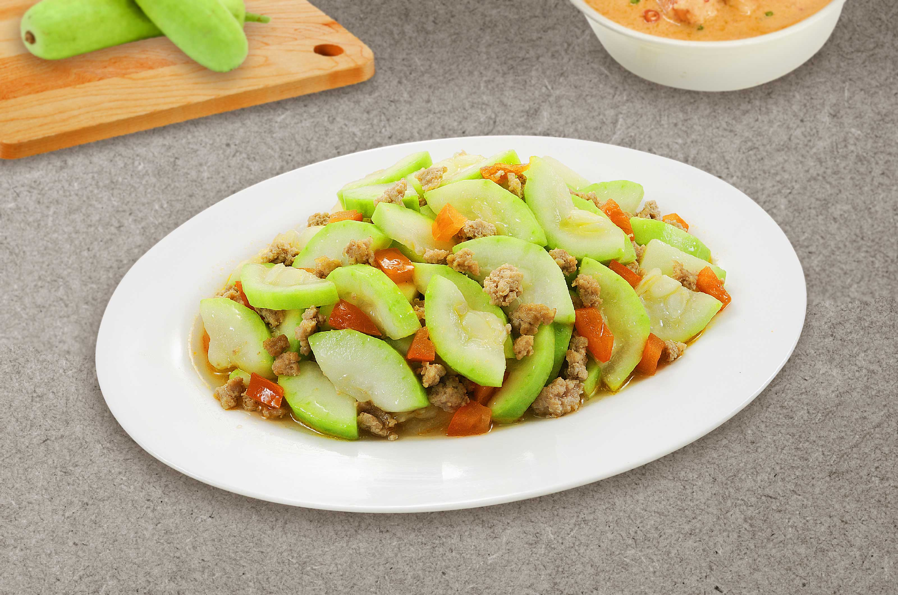

Home
Pork Adobo

Ginisang Upo is a light and healthy Filipino dish made from sautéed bottle gourd (upo). The upo is cooked with garlic, onion, tomatoes, and often paired with ground meat like pork or shrimp. It’s a simple, savory dish commonly served with steamed rice.
This dish is a perfect way to enjoy the mild, refreshing flavor of bottle gourd!
Ingredients
- 1 medium-sized bottle gourd (upo), peeled and sliced into thin strips or cubes
- 2 tbsp cooking oil
- 1 onion, chopped
- 2 tomatoes, chopped
- 2 cloves garlic, minced
- 3 bay leaves
- 1/2 lb ground pork or shrimp (optional)
- 1/4 cup water or broth
- Salt and pepper to taste
- Fish sauce or soy sauce (optional)
Steps
- Sauté Aromatics: Heat oil in a pan. Sauté the garlic, onion, and tomatoes until softened and fragrant.
- Cook the Meat: If using ground pork or shrimp, add them to the pan and cook until browned and cooked through.
- Add the Upo: Add the sliced upo to the pan and stir to combine. Cook for a few minutes.
- Simmer: Add water or broth to the pan. Cover and cook for about 5-7 minutes until the upo becomes tender.
- Season: Season with salt, pepper, and fish sauce or soy sauce, to taste.
- Serve: Once the upo is tender and the flavors are combined, remove from heat and serve with rice.